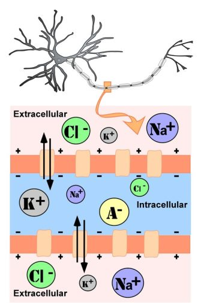
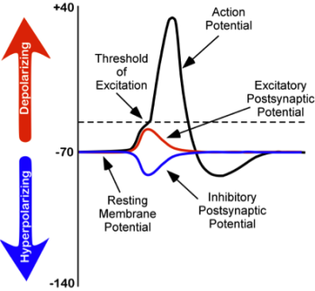
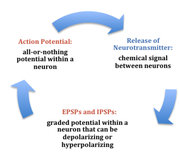
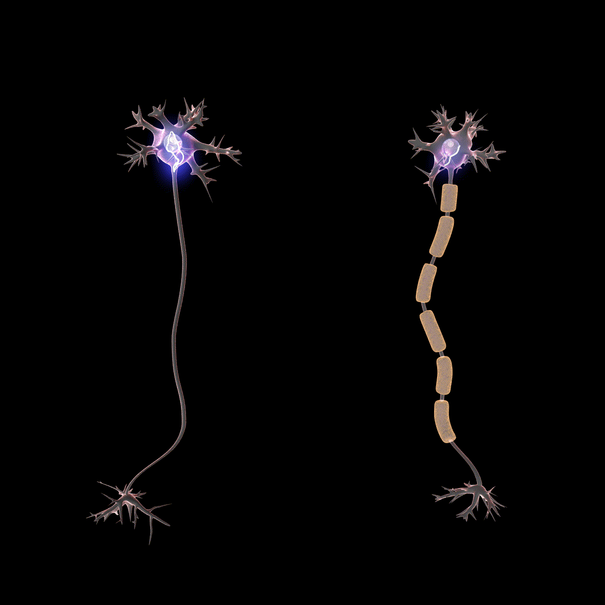

3.4: Communication Within and Between Neurons
Thus far, we have described the main characteristics of neurons, including how their processes come in close contact to form synapses. In this section, we consider the conduction of communication within a neuron and how this signal is transmitted to the next neuron. There are two stages of this electrochemical action in neurons. The first stage is the electrical conduction of dendritic input to the initiation of an action potential within a neuron. The second stage is a chemical transmission across the synaptic gap between the presynaptic neuron and the postsynaptic neuron of the synapse. To understand these processes, we first need to consider what occurs within a neuron at its steady state, called resting membrane potential.
Resting Membrane Potential
The intracellular (inside the cell) fluid and extracellular (outside the cell) fluid of neurons is composed of a combination of ions (electrically charged molecules; Figure 7). Cations are positively charged ions, and anions are negatively charged ions. The composition of intracellular and extracellular fluid is similar to salt water, containing sodium (Na+), potassium (K+), chloride (Cl–), and anions (A–).
The cell membrane, which is composed of a lipid bilayer of fat molecules, separates the cell from the surrounding extracellular fluid. Proteins span the membrane, forming ion channels that allow particular ions to pass between the intracellular and extracellular fluid (Figure 7). These ions are in different concentrations inside the cell relative to outside the cell, and the ions have different electrical charges. Due to this difference in concentration and charge, two forces act to maintain a steady state when the cell is at rest: diffusion and electrostatic pressure. Diffusion is the force on molecules to move from areas of high concentration to areas of low concentration. Electrostatic pressure is the repulsive force between similarly charged ions and the attractive force between oppositely charged ions. Remember the saying “opposites attract”?

There is a membrane potential at which the force of diffusion is equal and opposite to the force of electrostatic pressure. This voltage, called the equilibrium potential, is the voltage at which no ions flow. Since several ions can permeate the cell’s membrane, the baseline electrical charge inside the cell compared with outside the cell, referred to as resting membrane potential, is based on the collective drive of force on several ions. Relative to the extracellular fluid, the membrane potential of a neuron at rest is negatively charged at approximately -70 millivolts (mV). These voltages are tiny compared to those of batteries and electrical outlets, which are measured in volts, not millivolts, and range from 1.5 to 240 volts.
Let us see how these two forces, diffusion and electrostatic pressure, act on the four groups of ions mentioned above.
- Anions (A-): Anions are highly concentrated inside the cell and contribute to the negative charge of the resting membrane potential. Diffusion and electrostatic pressure are not forces that determine A– concentration because Anions are impermeable to the cell membrane. There are no ion channels that allow for A– to move between the intracellular and extracellular fluid.
- Potassium (K+): The cell membrane is permeable to potassium at rest, but potassium remains in high concentrations inside the cell. Diffusion pushes K+ outside the cell because it is in high concentration inside the cell. However, electrostatic pressure pushes K+ inside the cell because the positive charge of K+ is attracted to the negative charge inside the cell. In combination, these forces oppose one another with respect to K+.
- Chloride (Cl-): The cell membrane is also very permeable to chloride at rest, but chloride remains in high concentration outside the cell. Diffusion pushes Cl– inside the cell because it is in high concentration outside the cell. However, electrostatic pressure pushes Cl- outside the cell because the negative charge of Cl– is attracted to the positive charge outside the cell. These forces on Cl- oppose one another.
- Sodium (Na+): The cell membrane is not very permeable to sodium at rest. Diffusion pushes Na+ inside the cell because it is in high concentration outside the cell. Electrostatic pressure also pushes Na+ inside the cell because the positive charge of Na+ is attracted to the negative charge inside the cell. Both of these forces push Na+ inside the cell; however, Na+ cannot permeate the cell membrane and remains in high concentration outside the cell. The small amounts of Na+ inside the cell are removed by a sodium-potassium pump, which uses the neuron’s energy (adenosine triphosphate, ATP) to pump 3 Na+ ions out of the cell in exchange for bringing 2 K+ ions inside the cell.
Action Potential
Now that we have considered what occurs in a neuron at rest, let us consider what changes occur to the resting membrane potential when a neuron receives input from the presynaptic terminal button of another neuron. Our understanding of the electrical signals or potentials within a neuron results from the seminal work of Hodgkin and Huxley that began in the 1930s at a well-known marine biology lab in Woods Hole, MA. Their work, for which they won the Nobel Prize in Medicine in 1963, resulted in the general model of electrochemical transduction described here (Hodgkin & Huxley, 1952). Hodgkin and Huxley studied a very large axon in the squid, a common species for that region of the United States. The squid’s axon is roughly 100 times larger than axons in the mammalian brain, making it much easier to work with. Activation of the giant axon, whose large size allows for rapid electrical signal transmission, triggers a swift withdrawal response that enables the squid to escape from predators.
While studying this species, Hodgkin and Huxley noticed that if they applied an electrical stimulus to the axon, a large, transient electrical current conducted down the axon. This transient electrical current is known as an action potential (Figure 8). An action potential is an all-or-nothing response that occurs when there is a change in the charge or potential of the cell from its resting membrane potential (-70 mV) in a more positive direction, which is a depolarization (Figure 8). An all-or-nothing response parallels the binary code used in computers, where only two possibilities exist: 0 or 1. There are no intermediate values; 0.5, for example, doesn’t exist in binary code. Similarly, an action potential either occurs or doesn’t occur, with no partial activation. This all-or-nothing principle applies to both binary code and action potentials: they are either triggered fully or not at all.
There is a specific membrane potential that the neuron must reach to initiate an action potential. This membrane potential, called the threshold of excitation, is typically around -50 mV. If the threshold of excitation is reached, then an action potential is triggered.

How is an action potential initiated? At any one time, each neuron may receive hundreds of inputs from the cells that synapse with it. These inputs can cause several types of fluctuations in the neuron’s membrane potentials (Figure 8):
- Excitatory postsynaptic potentials (EPSPs): a depolarizing current that causes the membrane potential to become more positive and closer to the threshold of excitation
- Inhibitory postsynaptic potentials (IPSPs): a hyperpolarizing current that causes the membrane potential to become more negative and further away from the threshold of excitation
These postsynaptic potentials, EPSPs and IPSPs, summate or add together in time and space. The (inhibitory) IPSPs make the membrane potential more negative, but how much so depends on their strength. The (excitatory) EPSPs make the membrane potential more positive; again, how much more positive depends on their strength. If you have two small EPSPs at the same time and same synapse, then the result will be a large EPSP. If you have a small EPSP and a small IPSP at the same time and same synapse, then they will cancel each other out. Unlike the action potential, which is an all-or-nothing response, IPSPs and EPSPs are smaller and graded potentials, varying in strength. The change in voltage during an action potential is approximately 100 mV. In comparison, EPSPs and IPSPs are changes in voltage between 0.1 to 40 mV. They can be different strengths, or gradients, and they are measured by how far the membrane potentials diverge from the resting membrane potential.
The concept of summation can be confusing. As a child, I used to play a game with a very large parachute where you would try to knock balls out of the center of the parachute. This game illustrates the properties of summation. In this game, a group of children next to one another would work together to produce waves in the parachute in order to cause a wave large enough to knock the ball out of the parachute. The children would initiate the waves at the same time and in the same direction. The additive result was a larger wave in the parachute, and the balls would bounce out of the parachute. However, if the waves they initiated occurred in the opposite direction or with the wrong timing, the waves would cancel each other out, and the balls would remain in the center of the parachute. EPSPs or IPSPs in a neuron work in the same fashion; they either add or cancel each other out. If you have two EPSPs, then they sum together and become a larger depolarization. Similarly, if two IPSPs come into the cell at the same time, they will sum and become a larger hyperpolarization in membrane potential. However, if two inputs were opposing one another, moving the potential in opposite directions, such as an EPSP and an IPSP, their sum would cancel each other out.
At any moment, each cell is receiving mixed messages, both EPSPs and IPSPs. If the summation of EPSPs is strong enough to depolarize the membrane potential to reach the threshold of excitation, then it initiates an action potential. The action potential then travels down the axon, away from the soma, until it reaches the ends of the axon (the terminal button). In the terminal button, the action potential triggers the release of neurotransmitters from the presynaptic terminal button into the synaptic gap. These neurotransmitters, in turn, cause EPSPs and IPSPs in the postsynaptic dendritic spines of the next cell (Figure 9). The neurotransmitter released from the presynaptic terminal button binds with ionotropic receptors in a lock-and-key fashion on the postsynaptic dendritic spine. Ionotropic receptors are receptors on ion channels that open, allowing some ions to enter or exit the cell, depending upon the presence of a particular neurotransmitter. The type of neurotransmitter and the permeability of the ion channel it activates will determine if an EPSP or IPSP occurs in the dendrite of the postsynaptic cell. These EPSPs and IPSPs summate as described above and the entire process occurs again in another cell.
The Change in Membrane Potential During an Action Potential
We discussed previously which ions are involved in maintaining the resting membrane potential. Not surprisingly, some of these same ions are involved in the action potential. When the cell becomes depolarized (more positively charged) and reaches the threshold of excitation, this opens a voltage-dependent Na+ channel. A voltage-dependent ion channel is a channel that opens, allowing some ions to enter or exit the cell, depending upon when the cell reaches a particular membrane potential. When the cell is at resting membrane potential, these voltage-dependent Na+ channels are closed. As we learned earlier, both diffusion and electrostatic pressure are pushing Na+ inside the cells. However, Na+ cannot permeate the membrane when the cell is at rest. Now that these channels are open, Na+ rushes inside the cell, causing the cell to become very positively charged relative to the outside of the cell. This is responsible for the rising or depolarizing phase of the action potential (Figure 8). The inside of the cell becomes very positively charged, +40mV. At this point, the Na+ channels close and become refractory. This means the Na+ channels cannot reopen again until the cell returns to the resting membrane potential. Thus, a new action potential cannot occur during the refractory period. The refractory period also ensures the action potential can only move in one direction down the axon, away from the soma. As the cell becomes more depolarized, a second type of voltage-dependent channel opens; this channel is permeable to K+. With the cell depolarized (very positive relative to the outside of the cell) and the high concentration of K+ within the cell, the forces of both diffusion and electrostatic pressure drive K+ outside of the cell. The movement of K+ out of the cell causes the cell potential to return to the resting membrane potential, the falling or hyperpolarizing phase of the action potential (Figure 8). A short hyperpolarization occurs partially due to the gradual closing of the K+ channels. With the Na+ closed, electrostatic pressure continues to push K+ out of the cell. In addition, the sodium-potassium pump is pushing Na+ out of the cell. The cell returns to the resting membrane potential, and the excess extracellular K+ diffuses away. This exchange of Na+ and K+ ions happens very rapidly, in less than 1 millisecond. The action potential occurs in a wave-like motion down the axon until it reaches the terminal button. Only the ion channels in close proximity to the action potential are affected.

Earlier you learned that axons are often covered in myelin. Let us consider how myelin speeds up the process of the action potential. There are gaps in the myelin sheaths called nodes of Ranvier. The myelin insulates the axon and does not allow any fluid between the myelin and cell membrane. Under the myelin, when the Na+ and K+ channels open, no ions flow between the intracellular and extracellular fluid. This saves the cell from having to expend the energy necessary to rectify or regain the resting membrane potential. (Remember, the pumps need ATP to run.) Under the myelin, the action potential degrades some, but still has a large enough potential to trigger a new action potential at the next node of Ranvier. Thus, the action potential jumps from node to node (Figure 10); this process is known as saltatory conduction (Saltus means “jump” in Latin).

In the presynaptic terminal button, the action potential triggers the release of neurotransmitters. Neurotransmitters cross the synaptic gap and open subtypes of receptors in a lock-and-key fashion (see Figure 9). Depending on the type of neurotransmitter, an EPSP or IPSP occurs in the dendrite of the postsynaptic cell. Neurotransmitters that open Na+ or calcium (Ca+) channels cause an EPSP; an example is the NMDA receptors, which are activated by glutamate (the main excitatory neurotransmitter in the brain). In contrast, neurotransmitters that open Cl- or K+ channels cause an IPSP; an example is gamma-aminobutyric acid (GABA) receptors, which are activated by GABA, the main inhibitory neurotransmitter in the brain. Once the EPSPs and IPSPs occur in the postsynaptic site, the process of communication within and between neurons cycles on (Figure 9). A neurotransmitter that does not bind to receptors is broken down and inactivated by enzymes or glial cells, or it is taken back into the presynaptic terminal button in a process called reuptake, which will be discussed further in the chapter on psychopharmacology.
Media Attributions
- Unmylenated segment of the axon © Noba is licensed under a CC BY-NC-SA (Attribution NonCommercial ShareAlike) license
- Changes in membrane of neurons © Noba is licensed under a CC BY-NC-SA (Attribution NonCommercial ShareAlike) license
- Electrochemical communication © Noba is licensed under a CC BY-NC-SA (Attribution NonCommercial ShareAlike) license
- Two neurons © Wikipedia is licensed under a CC BY (Attribution) license


A bi-lipid layer of molecules that separates the cell from the surrounding extracellular fluid.
Proteins that span the cell membrane, forming channels that specific ions can flow through between the intracellular and extracellular space.
The force on molecules to move from areas of high concentration to areas of low concentration.
The force on two ions with similar charge to repel each other; the force of two ions with opposite charge to attract to one another.
The voltage inside the cell relative to the voltage outside the cell while the cell is at rest (approximately -70 mV).
An ion channel that uses the neuron’s energy (adenosine triphosphate, ATP) to pump three Na+ ions outside the cell in exchange for bringing two K+ ions inside the cell.
A transient all-or-nothing electrical current that is conducted down the axon when the membrane potential reaches the threshold of excitation.
Specific membrane potential that the neuron must reach to initiate an action potential.
A depolarizing postsynaptic current that causes the membrane potential to become more positive and move towards the threshold of excitation.
A hyperpolarizing postsynaptic current that causes the membrane potential to become more negative and move away from the threshold of excitation.
Ion channel that opens to allow ions to permeate the cell membrane under specific conditions, such as the presence of a neurotransmitter or a specific membrane potential.